| 상품 | 군마트 | 쿠팡 | 차이 | |
|---|---|---|---|---|
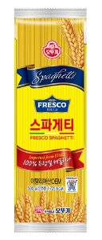 | 오뚜기 프레스코 스파게티 500G | 1,370원 | 2,915원 | -53% |
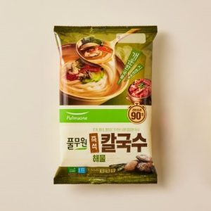 | 풀무원식품 즉석 해물 칼국수 424.8g | 3,300원 | 5,850원 | -44% |
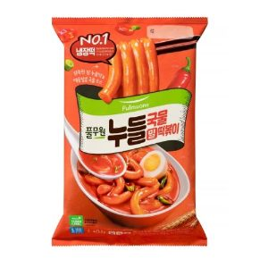 | 풀무원식품 밀누들 국물떡볶이2인 423.5g | 2,270원 | 3,980원 | -43% |
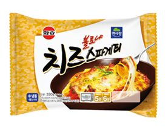 | 화승종합식품 치즈볼로냐스파게티 330g | 2,560원 | 4,480원 | -43% |
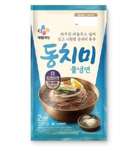 | 씨제이제일제당 동치미물냉면 908g | 3,660원 | 5,980원 | -39% |
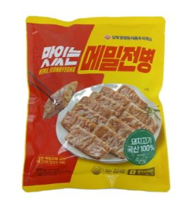 | 맛있는 메밀전병 360g | 3,170원 | 5,030원 | -37% |
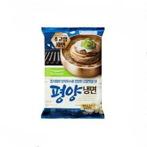 | 풀무원식품 평양냉면2인 846g | 3,000원 | 4,565원 | -34% |
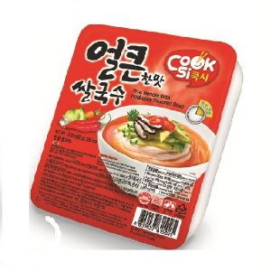 | 한스코리아 쿡시얼큰한맛쌀국수 92g | 980원 | 1,450원 | -32% |
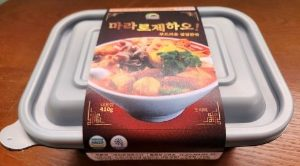 | 마라로제 파스타 410g | 5,020원 | 7,392원 | -32% |
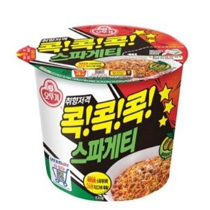 | 오뚜기 스파게티용기 120 g | 1,020원 | 1,473원 | -31% |
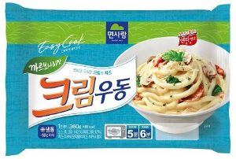 | 면사랑 크림우동 387g | 2,420원 | 3,471원 | -30% |
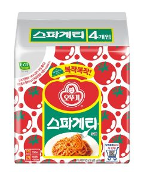 | 오뚜기 스파게티 멀티 600g | 2,550원 | 3,660원 | -30% |
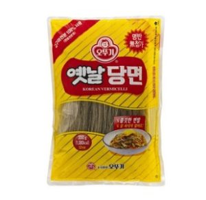 | 오뚜기 옛날당면 1kg | 8,670원 | 11,190원 | -22% |
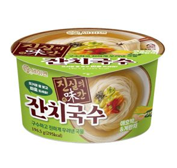 | 키다리식품 대전제2공장 세이면 진실의 미간 잔치국수 196.5g | 1,290원 | 1,648원 | -22% |
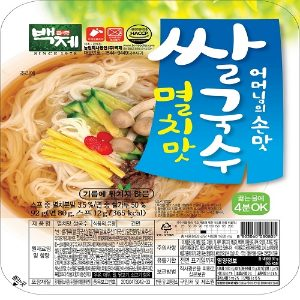 | 백제 멸치맛쌀국수 92g | 1,070원 | 1,350원 | -21% |
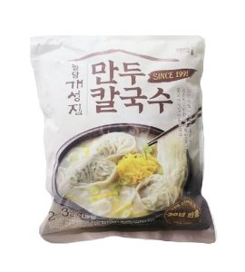 | 팔당 개성집 만두칼국수 1067g | 9,100원 | 11,470원 | -21% |
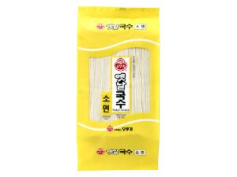 | 오뚜기 소면 1.5Kg | 3,960원 | 4,815원 | -18% |
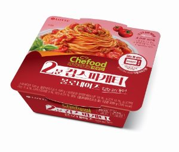 | 롯데웰푸드 볼로네이즈 스파게티 220g | 2,400원 | 2,900원 | -17% |
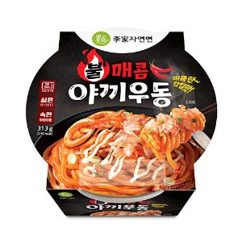 | 이가자연면 불매콤야끼우동 313g | 2,220원 | 2,669원 | -17% |
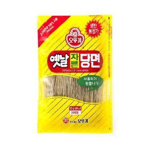 | 오뚜기 자른당면 500g | 4,960원 | 5,915원 | -16% |
면류 말고 다른 것도
더 이상 직접 비교하지 마세요.
군마트 상품을 한곳에 모아 PX 가격과 온라인 가격을 쉽게 비교할 수 있습니다.
이렇게 상품마다 PX 가격과 온라인 가격을 나란히 놓고 볼 수 있습니다.
ㄷㅌㅈ처럼 초성으로도 검색할 수 있어요.
국방가족 분들이 조금이라도 편하게 군마트를 이용하셨으면 하는 마음으로 만들었습니다.
국방가족을 위한 작은 재능기부입니다.